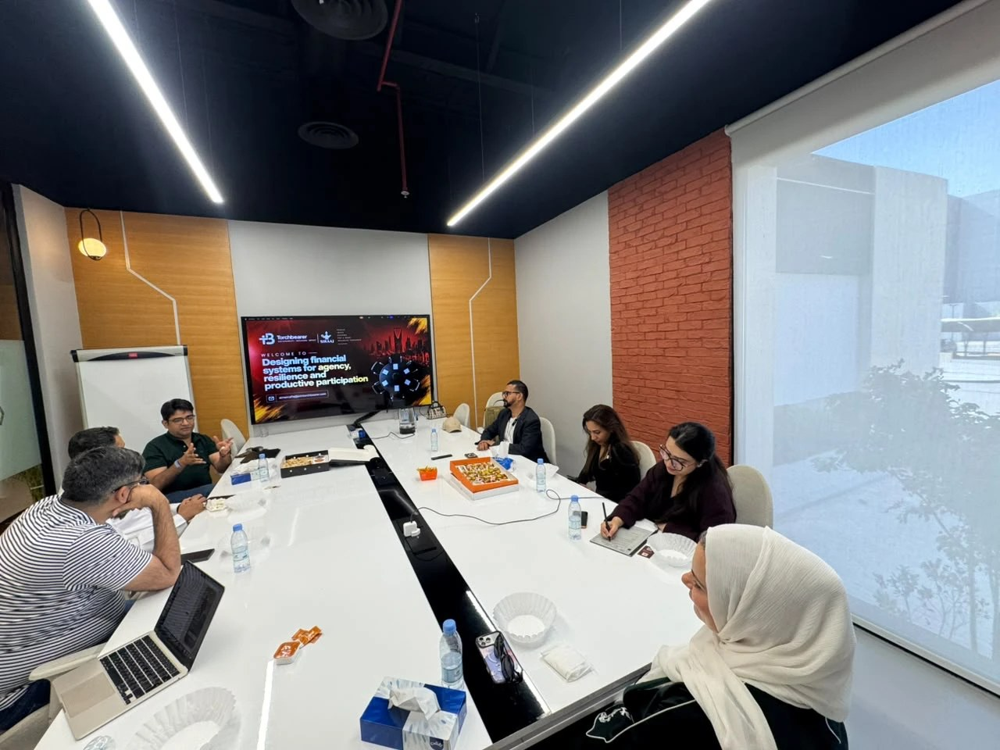

One table. One question.
Almost everyone now has access to finance. What would it take for it to work for them?
World Bank Global Findex 2025
Findings and six moves to 2030 from the Torchbearer roundtable.
From the Riyadh roundtable
Read the complete white paper, free, online.